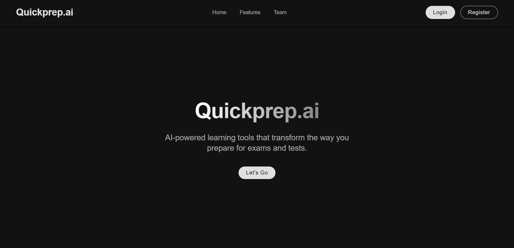

Quickprep.ai
Web App – AI in Education
DESCRIPTION
Quickprep.ai is an AI-powered web application designed to help teachers generate quizzes and track student performance effortlessly. By analyzing uploaded module notes, the platform uses large language models to generate multiple-choice questions (MCQs), which students can answer online. Teachers can then monitor individual and class-wide performance through a dynamic dashboard.
CONTEXT
Creating high-quality MCQs and tracking student understanding can be time-consuming for teachers. With Quickprep.ai, we aimed to remove these bottlenecks by using AI to automate quiz generation while enabling a streamlined interface for students to test themselves and track their progress. This made the learning loop faster, easier, and more transparent for both students and teachers.

Challenge
How might we enable teachers to generate quizzes from existing teaching materials, while also giving them detailed insights into individual student progress—all with minimal manual work?
Process
The project started with conversations with educators about the pain of creating new assessments. I explored how LLMs could transform this process. We experimented with several local and open-source models before settling on a cloud-hosted LLaMA 3.3 model via Groq for its performance and ease of integration. Based on early feedback from both students and teachers, we continuously refined the UI and quiz validation logic.
Solution
Quickprep.ai offers two distinct interfaces: one for teachers and one for students.
The AI-generated questions follow a strict JSON schema, validated through a custom script. Teachers are not required to craft questions from scratch—just review and tweak.
Takeaway & Reflection
This project deepened my understanding of LLM integrations and their practical constraints in educational tools. It also reinforced how thoughtfully applied AI can relieve educators from repetitive tasks, giving them more time to focus on pedagogy.
From a product perspective, it taught me how even simple UIs—when tuned to user feedback—can powerfully serve both ends of a system: teachers and students.